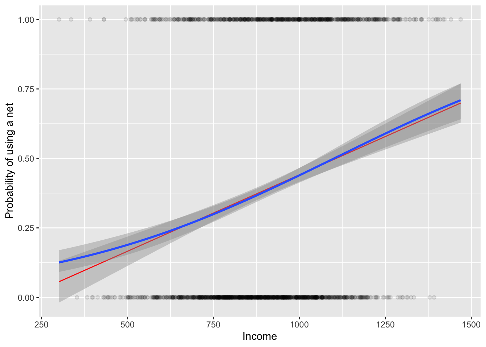

Aula 5 — Propensity score: regressão, ponderação (IPW) e pareamento
Autor
João Paulo Dellasta
Nota
Este exemplo é uma tradução e adaptação do material de Andrew Heiss (Program Evaluation for Public Service, exemplo “Matching and inverse probability weighting”), que também criou os dados simulados mosquito_nets.csv.
Probabilidade de alguém na casa ser infectado com malária. Medido em uma escala de 0-100, com valores mais altos indicando maior risco.
net e net_num
Variável binária indicando se a casa usou redes mosquiteiras.
eligible
Variável binária indicando se a casa é elegível para o programa de rede gratuita.
income
Renda mensal da casa, em dólares americanos.
temperature
Temperatura média à noite, em Celsius.
health
Saúde auto-relatada na casa. Medido em uma escala de 0-100, com valores mais altos indicando melhor saúde.
household
Número de pessoas vivendo na casa.
resistance
Algumas cepas de mosquitos são mais resistentes a inseticidas e, portanto, representam um risco maior de infectar pessoas com malária. Medido em uma escala de 0-100, com valores mais altos indicando maior resistência.
1.1 Testes t independentes para comparar as médias de diferentes variáveis entre dois grupos
Estamos testando se há diferença nas características observáveis entre os dois grupos definidos por net, uma variável binária que indica se a casa usou redes mosquiteiras ou não.
# Diferença na saúde entre casas com e sem redet.test(nets$health ~ nets$net_num)
Welch Two Sample t-test
data: nets$health by nets$net_num
t = -7.6447, df = 1346.9, p-value = 3.961e-14
alternative hypothesis: true difference in means between group 0 and group 1 is not equal to 0
95 percent confidence interval:
-8.610309 -5.093693
sample estimates:
mean in group 0 mean in group 1
48.05696 54.90896
1.2 Explicação do Teste t de Duas Amostras de Welch
Este é um teste t para duas amostras independentes que não assume igualdade de variâncias entre os grupos. É adequado quando as variâncias dos dois grupos que você está comparando podem não ser iguais.
Interpretação para a comparação entre: nets$health e nets$net: Estamos comparando as médias da variável health (saúde) entre os dois grupos definidos pela variável net. Net é uma variável binária, onde 1 identifica que a casa usa redes mosquiteiras e 0 indica que não usa.
1.3 Hipóteses do teste
Hipótese nula: A verdadeira diferença nas médias entre os grupos é igual a 0.
Hipótese Alternativa: A verdadeira diferença nas médias entre os grupos não é igual a 0.
1.4 Os principais resultados do teste para a diferença de saúde entre os dois grupos:
A diferença de médias é de -6.852: As casas que não usam redes mosquiteiras (grupo 0) têm uma média de saúde auto-relatada de 48.05696, enquanto as casas que usam redes mosquiteiras (grupo 1) têm uma média de saúde auto-relatada de 54.90896.
Ou seja: 48.05696 - 54.90896 = -6.852
Estatísticas:
t = -7.6447, df = 1346.9, p-value = 3.961e-14
O valor t de -7.6447 é o valor estatístico do teste t. Ele é negativo, o que indica que a média do grupo que não usa rede é menor que a média do grupo que usa.
O valor p é extremamente pequeno (3.961e-14), muito menor que o nível de significância comum de 0,05. Isso indica que a diferença nas médias de saúde entre os dois grupos é estatisticamente significativa.
Intervalo de Confiança de 95%: -8.610309 a -5.093693
Estamos 95% confiantes de que a verdadeira diferença nas médias de saúde entre os dois grupos está entre -8.610309 e -5.093693. Como o intervalo não inclui 0 e é totalmente negativo, isso reforça que o grupo sem redes tem uma média significativamente menor do que o grupo com redes mosquiteiras.
Conclusão:
Há uma diferença estatisticamente significativa nas médias de saúde auto-relatada entre casas que usam redes mosquiteiras e aquelas que não usam. Especificamente, casas que usam redes mosquiteiras têm uma média de saúde auto-relatada significativamente maior do que aquelas que não usam.
1.5 Porém, o que mais pode variar entre esses dois grupos?
# Diferença na renda entre casas com e sem redet.test(nets$income ~ nets$net_num)
Welch Two Sample t-test
data: nets$income by nets$net_num
t = -8.8113, df = 1284.7, p-value < 2.2e-16
alternative hypothesis: true difference in means between group 0 and group 1 is not equal to 0
95 percent confidence interval:
-100.79660 -64.08593
sample estimates:
mean in group 0 mean in group 1
872.7526 955.1938
Interpretação: A diferença nas médias de renda entre os dois grupos é estatisticamente significativa, com o grupo que usa redes mosquiteiras tendo uma renda média maior. O intervalo de confiança não inclui zero, reforçando a significância da diferença.
# Diferença na temperatura da região em que moram as casas com e sem redet.test(nets$temperature ~ nets$net_num)
Welch Two Sample t-test
data: nets$temperature by nets$net_num
t = 3.492, df = 1404.3, p-value = 0.0004943
alternative hypothesis: true difference in means between group 0 and group 1 is not equal to 0
95 percent confidence interval:
0.3098586 1.1042309
sample estimates:
mean in group 0 mean in group 1
24.08796 23.38091
Interpretação: A diferença na temperatura média dos locais é estatisticamente significativa, mas a diferença em termos absolutos é pequena, indicando que as casas que não usam redes estão em locais ligeiramente mais quentes.
1.6 Exemplo da relação do teste t com regressão linear bivariada
# A mesma comparação feita com uma regressão bivariadasummary(lm(temperature ~ net_num,data = nets))
Call:
lm(formula = temperature ~ net_num, data = nets)
Residuals:
Min 1Q Median 3Q Max
-8.488 -3.181 0.012 3.212 8.819
Coefficients:
Estimate Std. Error t value Pr(>|t|)
(Intercept) 24.0880 0.1251 192.552 < 2e-16 ***
net_num -0.7070 0.2007 -3.524 0.000436 ***
---
Signif. codes: 0 '***' 0.001 '**' 0.01 '*' 0.05 '.' 0.1 ' ' 1
Residual standard error: 4.094 on 1750 degrees of freedom
Multiple R-squared: 0.007045, Adjusted R-squared: 0.006478
F-statistic: 12.42 on 1 and 1750 DF, p-value: 0.0004365
Objetivo: Avaliar a relação entre a variável independente net_num (indicando uso de redes mosquiteiras) e a variável dependente temperature (temperatura média).
Interpretação dos Resultados: Intercepto: O valor de 24.0880 representa a temperatura média esperada quando net_num é zero, ou seja, para o grupo que não usa redes.
Coeficiente de net_num: O valor de -0.7070 indica que, em média, as casas que usam redes mosquiteiras têm uma temperatura 0.707 graus Celsius menor do que aquelas que não usam. Este coeficiente é estatisticamente significativo (p < 0.001), sugerindo uma diferença significativa na temperatura.
R² e Ajuste: O R² ajustado é muito baixo (0,0065), indicando que net_num explica apenas uma pequena parte da variação na temperatura. Repare que o coeficiente de net_num é exatamente a diferença de médias do teste t: uma regressão com uma variável binária compara médias.
2 Modelo Causal
2.1 Objetivo
Nosso objetivo neste exemplo é estimar o efeito causal do uso de redes mosquiteiras no risco de malária usando apenas dados observacionais.
Obs.: Isso não foi um estudo randomizado controlado (RCT em inglês), então pode parecer um pouco duvidoso fazer afirmações de causalidade.
2.2 Resultado
Como esses dados são simulados, sabemos o verdadeiro efeito causal das redes: ele foi definido na simulação.
O verdadeiro efeito médio do tratamento (ATE, na sigla em inglês) é -10. Usar uma rede mosquiteira faz com que o risco de malária diminua em 10 pontos, em média.
Vamos ver se conseguimos encontrar esse efeito de 10 pontos!
2.3 Estimativa ingênua: correlação não implica causalidade
Efeito da diferença de médias = 25.6 - 41.9 = -16.3
model_wrong <-lm(malaria_risk ~ net, data = nets)summary(model_wrong)
Call:
lm(formula = malaria_risk ~ net, data = nets)
Residuals:
Min 1Q Median 3Q Max
-26.937 -9.605 -1.937 7.063 55.395
Coefficients:
Estimate Std. Error t value Pr(>|t|)
(Intercept) 41.9365 0.4049 103.57 <2e-16 ***
netTRUE -16.3315 0.6495 -25.15 <2e-16 ***
---
Signif. codes: 0 '***' 0.001 '**' 0.01 '*' 0.05 '.' 0.1 ' ' 1
Residual standard error: 13.25 on 1750 degrees of freedom
Multiple R-squared: 0.2654, Adjusted R-squared: 0.265
F-statistic: 632.3 on 1 and 1750 DF, p-value: < 2.2e-16
Embora os resultados mostrem uma correlação clara (casas que usam redes mosquiteiras têm, em média, um risco de malária 16,3 pontos menor, numa escala de 0 a 100), não podemos concluir imediatamente que o uso de redes mosquiteiras causa uma redução no risco de malária com base apenas nesses dados. Pode haver outros fatores não considerados que influenciam o risco de malária. As casas que usam redes têm, por exemplo, renda mais alta e melhor saúde, e essas variáveis também afetam o risco de malária (são confundidores). A seguir, usamos o propensity score para ajustar por esses confundidores observáveis.
2.4 Propensity Score
O propensity score é a probabilidade de receber o tratamento dadas as características observáveis. O processo tem dois passos:
Estimar o escore de propensão de cada casa, com uma regressão logística do tratamento (net) nos confundidores.
Usar o escore para comparar casas parecidas. Faremos isso de três formas: (a) incluindo o escore como controle na regressão, (b) transformando-o em pesos de probabilidade inversa (IPW) e (c) pareando casas tratadas e não tratadas (matching).
Tudo isso só elimina o viés causado por variáveis observáveis incluídas no modelo. Se houver um confundidor não observado, o propensity score não resolve o problema.
ggplot(nets, aes(x = income, y = net_num)) +geom_point(alpha =0.1) +geom_smooth(method ="lm", formula = y ~ x, color ="red", linewidth =0.5) +geom_smooth(method ="glm", formula = y ~ x,method.args =list(family =binomial(link ="logit"))) +labs(x ="Income", y ="Probability of using a net")

Para usar a regressão logística, você deve especificar uma família binomial/logit assim: family = binomial(link = “logit”)
model_logit <-glm(net ~ income +#renda temperature +#temperatura média à noite health, #saudedata = nets,family =binomial(link ="logit"))summary(model_logit)
Call:
glm(formula = net ~ income + temperature + health, family = binomial(link = "logit"),
data = nets)
Coefficients:
Estimate Std. Error z value Pr(>|z|)
(Intercept) -1.3161456 0.3759473 -3.501 0.000464 ***
income 0.0020865 0.0004212 4.954 7.27e-07 ***
temperature -0.0588646 0.0125327 -4.697 2.64e-06 ***
health 0.0068794 0.0042970 1.601 0.109384
---
Signif. codes: 0 '***' 0.001 '**' 0.01 '*' 0.05 '.' 0.1 ' ' 1
(Dispersion parameter for binomial family taken to be 1)
Null deviance: 2341.2 on 1751 degrees of freedom
Residual deviance: 2235.7 on 1748 degrees of freedom
AIC: 2243.7
Number of Fisher Scoring iterations: 4
head(predict(model_logit, type ="response"), n=20)
O intervalo dos scores vai de aproximadamente 0.10 a 0.74.
Isso significa que, no seu conjunto de dados, a menor probabilidade estimada de um domicílio participar do tratamento é cerca de 10%, enquanto a maior é cerca de 74%.
Interpretação Prática:
Um score mais próximo de 1 indica uma maior probabilidade de que, baseando-se nas características observáveis, um domicílio receba o tratamento.
Um score mais próximo de 0 indica uma menor probabilidade de participação no tratamento.
2.4.3 Agora vamos plotar as densidades dos dois grupos (inscritos e não inscritos)
Eixo X (sc): Representa os propensity scores, que são as probabilidades preditas de participação no tratamento.
Eixo Y (density): Representa a densidade, indicando a frequência relativa dos scores dentro de cada grupo.
Distribuições:
O painel à esquerda mostra a distribuição dos scores para o grupo que não recebeu o tratamento (FALSE).
O painel à direita mostra a distribuição dos scores para o grupo que recebeu o tratamento (TRUE).
Sobreposição:
A sobreposição das distribuições indica a área de comparabilidade, onde os scores dos dois grupos se sobrepõem.
Essa área é importante para o pareamento, pois permite encontrar unidades não tratadas com scores similares às tratadas, facilitando comparações justas.
2.4.5 Calculando os efeitos
Com os escores calculados, vamos comparar diferentes estimativas do efeito do uso de redes sobre o risco de malária.
d3 <-data.frame(nets$malaria_risk, nets$net, sc)
Modelo 1 - Propensity score como variável de controle
mod <-lm(nets.malaria_risk ~ nets.net + sc, data=d3)summary(mod)
Call:
lm(formula = nets.malaria_risk ~ nets.net + sc, data = d3)
Residuals:
Min 1Q Median 3Q Max
-20.1624 -4.7931 -0.4997 4.3289 25.4635
Coefficients:
Estimate Std. Error t value Pr(>|t|)
(Intercept) 77.7597 0.5724 135.84 <2e-16 ***
nets.netTRUE -10.3258 0.3537 -29.19 <2e-16 ***
sc -98.1677 1.4555 -67.45 <2e-16 ***
---
Signif. codes: 0 '***' 0.001 '**' 0.01 '*' 0.05 '.' 0.1 ' ' 1
Residual standard error: 6.985 on 1749 degrees of freedom
Multiple R-squared: 0.796, Adjusted R-squared: 0.7958
F-statistic: 3412 on 2 and 1749 DF, p-value: < 2.2e-16
Call:
lm(formula = nets.malaria_risk ~ nets.net, data = d3)
Residuals:
Min 1Q Median 3Q Max
-26.937 -9.605 -1.937 7.063 55.395
Coefficients:
Estimate Std. Error t value Pr(>|t|)
(Intercept) 41.9365 0.4049 103.57 <2e-16 ***
nets.netTRUE -16.3315 0.6495 -25.15 <2e-16 ***
---
Signif. codes: 0 '***' 0.001 '**' 0.01 '*' 0.05 '.' 0.1 ' ' 1
Residual standard error: 13.25 on 1750 degrees of freedom
Multiple R-squared: 0.2654, Adjusted R-squared: 0.265
F-statistic: 632.3 on 1 and 1750 DF, p-value: < 2.2e-16
Modelo 3 - Sem o propensity score mas controlando pelas variáveis do banco
mod3 <-lm(malaria_risk ~ net + income + temperature + health,data = nets)summary(mod3)
Call:
lm(formula = malaria_risk ~ net + income + temperature + health,
data = nets)
Residuals:
Min 1Q Median 3Q Max
-13.143 -3.915 -0.561 3.333 16.461
Coefficients:
Estimate Std. Error t value Pr(>|t|)
(Intercept) 76.159901 0.926835 82.17 <2e-16 ***
netTRUE -10.441932 0.264906 -39.42 <2e-16 ***
income -0.075144 0.001035 -72.58 <2e-16 ***
temperature 1.005855 0.030953 32.50 <2e-16 ***
health 0.148362 0.010668 13.91 <2e-16 ***
---
Signif. codes: 0 '***' 0.001 '**' 0.01 '*' 0.05 '.' 0.1 ' ' 1
Residual standard error: 5.244 on 1747 degrees of freedom
Multiple R-squared: 0.8852, Adjusted R-squared: 0.8849
F-statistic: 3366 on 4 and 1747 DF, p-value: < 2.2e-16
Modelo 4 - Ponderação pelo inverso da probabilidade (IPW)
Cada casa tratada recebe peso \(1/\hat{p}\) e cada casa não tratada recebe peso \(1/(1-\hat{p})\), onde \(\hat{p}\) é o escore de propensão. Assim, casas que receberam um tratamento “improvável” para o seu perfil ganham mais peso, e os dois grupos ficam balanceados nos confundidores.
Call:
lm(formula = malaria_risk ~ net, data = nets, weights = ipw)
Weighted Residuals:
Min 1Q Median 3Q Max
-45.705 -14.622 -4.924 10.791 162.642
Coefficients:
Estimate Std. Error t value Pr(>|t|)
(Intercept) 39.6788 0.4684 84.71 <2e-16 ***
netTRUE -10.1312 0.6583 -15.39 <2e-16 ***
---
Signif. codes: 0 '***' 0.001 '**' 0.01 '*' 0.05 '.' 0.1 ' ' 1
Residual standard error: 19.54 on 1750 degrees of freedom
Multiple R-squared: 0.1192, Adjusted R-squared: 0.1187
F-statistic: 236.8 on 1 and 1750 DF, p-value: < 2.2e-16
Modelo 5 - Pareamento (matching)
pareamento <-matchit(net ~ income + temperature + health,data = nets,method ="nearest",distance ="mahalanobis",replace =TRUE)summary(pareamento)
Call:
matchit(formula = net ~ income + temperature + health, data = nets,
method = "nearest", distance = "mahalanobis", replace = TRUE)
Summary of Balance for All Data:
Means Treated Means Control Std. Mean Diff. Var. Ratio eCDF Mean
income 955.1938 872.7526 0.4089 1.3633 0.1044
temperature 23.3809 24.0880 -0.1685 1.0846 0.0424
health 54.9090 48.0570 0.3619 1.2083 0.0714
eCDF Max
income 0.1983
temperature 0.0972
health 0.1683
Summary of Balance for Matched Data:
Means Treated Means Control Std. Mean Diff. Var. Ratio eCDF Mean
income 955.1938 950.1836 0.0248 1.1061 0.0093
temperature 23.3809 23.4066 -0.0061 1.0335 0.0067
health 54.9090 54.5433 0.0193 1.0714 0.0073
eCDF Max Std. Pair Dist.
income 0.0485 0.1202
temperature 0.0264 0.1196
health 0.0264 0.1239
Sample Sizes:
Control Treated
All 1071. 681
Matched (ESS) 320.94 681
Matched 436. 681
Unmatched 635. 0
Discarded 0. 0
dados_pareados <-match.data(pareamento)# Com reposição, cada caso de controle pode ser usado mais de uma vez:# por isso é obrigatório usar os pesos gerados pelo matchitmod_match <-lm(malaria_risk ~ net, data = dados_pareados, weights = weights)summary(mod_match)
Call:
lm(formula = malaria_risk ~ net, data = dados_pareados, weights = weights)
Weighted Residuals:
Min 1Q Median 3Q Max
-38.295 -7.605 -2.365 5.395 55.395
Coefficients:
Estimate Std. Error t value Pr(>|t|)
(Intercept) 36.0896 0.5971 60.45 <2e-16 ***
netTRUE -10.4846 0.7647 -13.71 <2e-16 ***
---
Signif. codes: 0 '***' 0.001 '**' 0.01 '*' 0.05 '.' 0.1 ' ' 1
Residual standard error: 12.47 on 1115 degrees of freedom
Multiple R-squared: 0.1443, Adjusted R-squared: 0.1435
F-statistic: 188 on 1 and 1115 DF, p-value: < 2.2e-16
2.4.6 Conclusão:
Todos os modelos indicam que o uso de redes mosquiteiras está associado a uma redução no risco de malária, mas a magnitude varia:
Modelo
Estimativa
Diferença de médias (ingênuo)
cerca de −16,3
Propensity score como controle
cerca de −10,3
Controles diretos na regressão
cerca de −10,4
Ponderação (IPW)
cerca de −10,1
Pareamento
ver resultado acima
A estimativa ingênua exagera o efeito porque as casas que usam redes já tinham, por outros motivos (renda, saúde, temperatura), menor risco de malária. Quando ajustamos pelos confundidores observáveis, as estimativas se aproximam do verdadeiro efeito de −10 pontos definido na simulação; a ponderação (IPW) é a que chega mais perto. Lembre que isso só funciona porque, nesta simulação, sabemos que renda, temperatura e saúde são todos os confundidores relevantes. Com dados reais, nunca temos essa garantia.